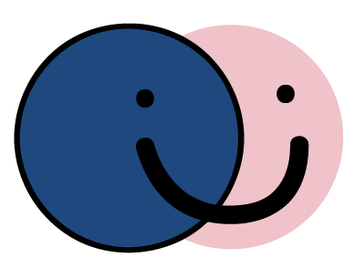

<ion-side-menus enable-menu-with-back-views="false">
  <ion-side-menu-content>
    <ion-nav-bar class="bar-stable">
      <ion-nav-back-button>
      </ion-nav-back-button>

      <ion-nav-buttons side="left">
        <button class="button button-icon button-clear ion-navicon" menu-toggle="left">
        </button>
      </ion-nav-buttons>
    </ion-nav-bar>
    <ion-nav-view name="menuContent"></ion-nav-view>
  </ion-side-menu-content>

  <ion-side-menu side="left">
    <ion-header-bar>
      <h1 class="title"></h1>
    </ion-header-bar>
    <ion-content>
      <ion-list>
        <ion-item menu-close href="#/app/login" style="color:#4F5052;">
          <i class="ion-social-facebook-outline"></i>
          Login/Logout
        </ion-item>
        <ion-item menu-close href="#/app/search" style="color:#4F5052;">
          <i class="ion-ios-search-strong"></i>
          Search
        </ion-item>
        <ion-item menu-close href="#/app/addevent" style="color:#4F5052;">
          <i class="ion-ios-plus-outline"></i>
          Add Event
        </ion-item>
        <ion-item menu-close href="#/app/myevents" style="color:#4F5052;">
          <i class="ion-ios-list-outline"></i>
          My Events
        </ion-item>
        <ion-item menu-close href="#/app/joinedevents" style="color:#4F5052;">
          <i class="ion-ios-personadd-outline"></i>
          Joined Events
        </ion-item>
      </ion-list>
    </ion-content>
  </ion-side-menu>
</ion-side-menus>
